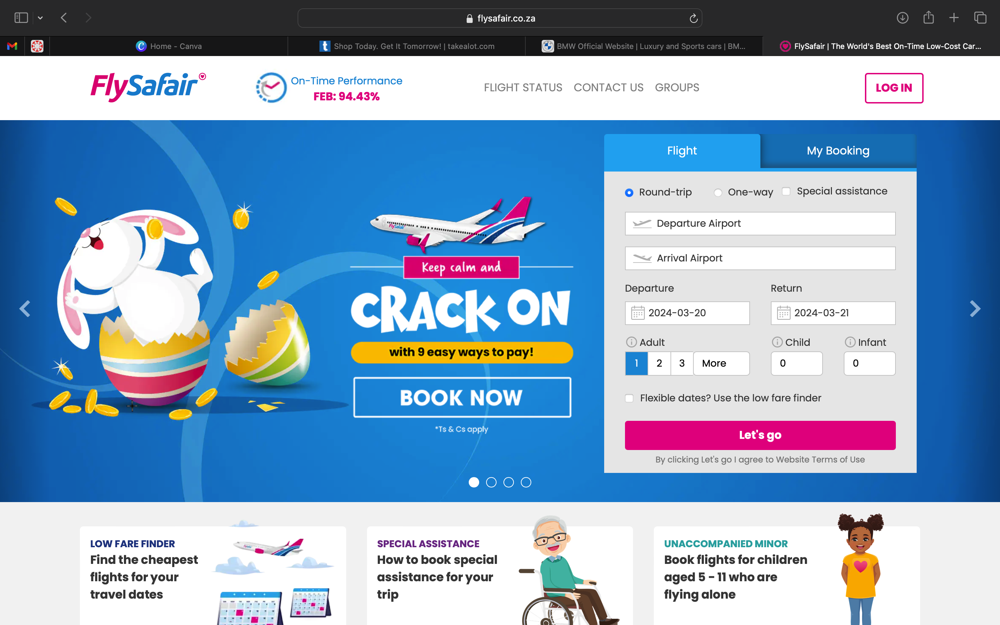
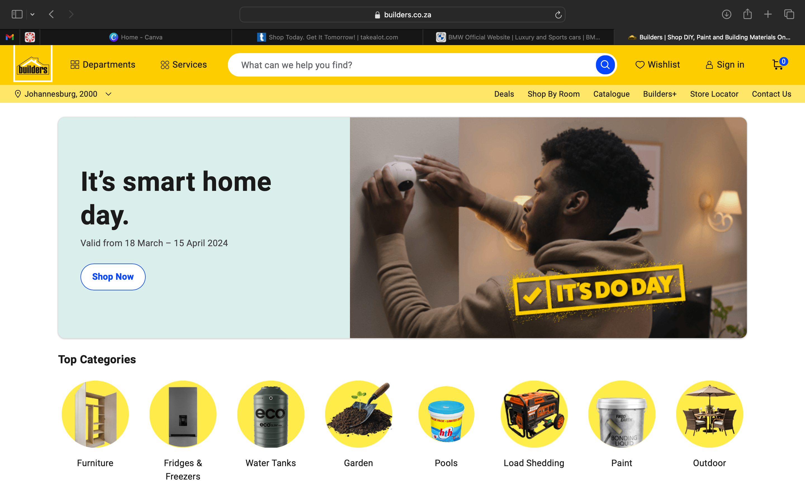
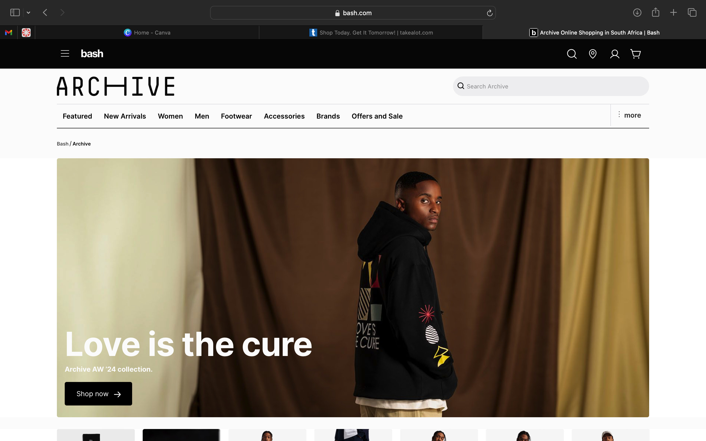
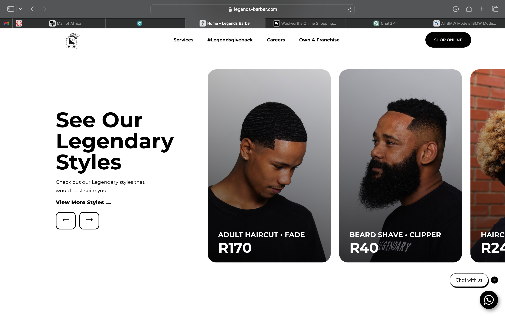

Week 6: Websites for Assignment Essay
FlySafair

Pros:
- The website provides the action of service clearly using an interface that allows users to select information about booking
their flights, e.g. flight departure and arrival.
- The website offers knowledge about sales and specials that are active, and allows users to select their preferred sale.
- Gives users opportunities to amend, change and cancel their bookings.
- Prices including value added tax(VAT) are clearly presented.
Cons:
- I haven’t found an cons on this website
Builders Warehouse

Pros:
- Users are presented with multiple products and options to choose from.
- Information regarding a product is clear and concise and presented in these categories: brand, product type, product and
product use
- Users can check which branches their desired product is available at.
- Products are categorized, making it less time consuming, e.g. Outdoor garden and patio/ Lighting.
Cons:
- I noticed instead of having one interface container that allowed users to choose the same product but different versions of it,
they the same product displayed as different buttons.
Bash

Pros:
- Users can are offered options to choose between gender, age, type of clothing, brand and clothing sizes using buttons.
- Users are presented pictures of models wearing the clothes they are looking at, to give them an idea of the style and look.
- Users can select specific stores which are available on the bash website, e.g. Foschini, Sportscene and etc.
Cons:
- I haven't found any cons with this website.
BMW South Africa

Pros:
- Difference between electrical and gas cars is shown using an icon of an electrical charger.
- Users can configure cars, select car packages and extras that the website visual portrays, e.g. Red interior/green interior.
Cons:
- I haven't found any cons with this website.
Legends Barber

Pros:
- Users are able to book appointments at their local branch.
Cons:
- The interface for the display of images confused me a bit because I thought they were buttons for the different haircuts. I
thought after pressing on them, information about each haircut would be displayed.